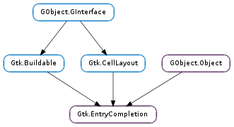

| static | new() |
| static | new_with_area(area) |
| complete() | |
| compute_prefix(key) | |
| delete_action(index_) | |
| get_completion_prefix() | |
| get_entry() | |
| get_inline_completion() | |
| get_inline_selection() | |
| get_minimum_key_length() | |
| get_model() | |
| get_popup_completion() | |
| get_popup_set_width() | |
| get_popup_single_match() | |
| get_text_column() | |
| insert_action_markup(index_, markup) | |
| insert_action_text(index_, text) | |
| insert_prefix() | |
| set_inline_completion(inline_completion) | |
| set_inline_selection(inline_selection) | |
| set_match_func(func, *func_data) | |
| set_minimum_key_length(length) | |
| set_model(model) | |
| set_popup_completion(popup_completion) | |
| set_popup_set_width(popup_set_width) | |
| set_popup_single_match(popup_single_match) | |
| set_text_column(column) |
| Name | Type | Flags | Description |
|---|---|---|---|
| cell-area | Gtk.CellArea | r/w/c | The Gtk.CellArea used to layout cells |
| inline-completion | bool | r/w | Whether the common prefix should be inserted automatically |
| inline-selection | bool | r/w | Your description here |
| minimum-key-length | int | r/w | Minimum length of the search key in order to look up matches |
| model | Gtk.TreeModel | r/w | The model to find matches in |
| popup-completion | bool | r/w | Whether the completions should be shown in a popup window |
| popup-set-width | bool | r/w | If True, the popup window will have the same size as the entry |
| popup-single-match | bool | r/w | If True, the popup window will appear for a single match. |
| text-column | int | r/w | The column of the model containing the strings. |
| Name | Parameters | Return | Description |
|---|---|---|---|
| action-activated | int | Gets emitted when an action is activated. | |
| cursor-on-match | Gtk.TreeModel, Gtk.TreeIter | bool | Gets emitted when a match from the cursor is on a match of the list. The default behaviour is to replace the contents of the entry with the contents of the text column in the row pointed to by iter. Note that model is the model that was passed to Gtk.EntryCompletion.set_model (). |
| insert-prefix | str | bool | Gets emitted when the inline autocompletion is triggered. The default behaviour is to make the entry display the whole prefix and select the newly inserted part. Applications may connect to this signal in order to insert only a smaller part of the prefix into the entry - e.g. the entry used in the Gtk.FileChooser inserts only the part of the prefix up to the next ‘/’. |
| match-selected | Gtk.TreeModel, Gtk.TreeIter | bool | Gets emitted when a match from the list is selected. The default behaviour is to replace the contents of the entry with the contents of the text column in the row pointed to by iter. Note that model is the model that was passed to Gtk.EntryCompletion.set_model (). |
| Name | Type | Access |
|---|---|---|
| parent_instance | GObject.Object | r |
Bases: GObject.Object, Gtk.Buildable, Gtk.CellLayout
Gtk.EntryCompletion is an auxiliary object to be used in conjunction with Gtk.Entry to provide the completion functionality. It implements the Gtk.CellLayout interface, to allow the user to add extra cells to the Gtk.TreeView with completion matches.
“Completion functionality” means that when the user modifies the text in the entry, Gtk.EntryCompletion checks which rows in the model match the current content of the entry, and displays a list of matches. By default, the matching is done by comparing the entry text case-insensitively against the text column of the model (see Gtk.EntryCompletion.set_text_column ()), but this can be overridden with a custom match function (see Gtk.EntryCompletion.set_match_func ()).
When the user selects a completion, the content of the entry is updated. By default, the content of the entry is replaced by the text column of the model, but this can be overridden by connecting to the Gtk.EntryCompletion ::match-selected signal and updating the entry in the signal handler. Note that you should return True from the signal handler to suppress the default behaviour.
To add completion functionality to an entry, use Gtk.Entry.set_completion ().
In addition to regular completion matches, which will be inserted into the entry when they are selected, Gtk.EntryCompletion also allows to display “actions” in the popup window. Their appearance is similar to menuitems, to differentiate them clearly from completion strings. When an action is selected, the Gtk.EntryCompletion ::action-activated signal is emitted.
Gtk.EntryCompletion uses a Gtk.TreeModelFilter model to represent the subset of the entire model that is currently matching. While the Gtk.EntryCompletion signals Gtk.EntryCompletion ::match-selected and Gtk.EntryCompletion ::cursor-on-match take the original model and an iter pointing to that model as arguments, other callbacks and signals (such as Gtk.CellLayoutDataFuncs or Gtk.CellArea ::apply-attributes ) will generally take the filter model as argument. As long as you are only calling Gtk.TreeModel.get (), this will make no difference to you. If for some reason, you need the original model, use Gtk.TreeModelFilter.get_model (). Don’t forget to use Gtk.TreeModelFilter.convert_iter_to_child_iter () to obtain a matching iter.
| Returns: | A newly created Gtk.EntryCompletion object |
|---|---|
| Return type: | Gtk.EntryCompletion |
Creates a new Gtk.EntryCompletion object.
| Parameters: | area (Gtk.CellArea) – the Gtk.CellArea used to layout cells |
|---|---|
| Returns: | A newly created Gtk.EntryCompletion object |
| Return type: | Gtk.EntryCompletion |
Creates a new Gtk.EntryCompletion object using the specified area to layout cells in the underlying Gtk.TreeViewColumn for the drop-down menu.
Requests a completion operation, or in other words a refiltering of the current list with completions, using the current key. The completion list view will be updated accordingly.
| Parameters: | key (str) – The text to complete for |
|---|---|
| Returns: | The common prefix all rows starting with key or None if no row matches key. |
| Return type: | str |
Computes the common prefix that is shared by all rows in completion that start with key. If no row matches key, None will be returned. Note that a text column must have been set for this function to work, see Gtk.EntryCompletion.set_text_column () for details.
| Parameters: | index_ (int) – the index of the item to delete |
|---|
Deletes the action at index_ from completion ‘s action list.
| Returns: | the prefix for the current completion |
|---|---|
| Return type: | str |
Get the original text entered by the user that triggered the completion or None if there’s no completion ongoing.
| Returns: | The entry completion has been attached to |
|---|---|
| Return type: | Gtk.Widget |
Gets the entry completion has been attached to.
| Returns: | True if inline completion is turned on |
|---|---|
| Return type: | bool |
Returns whether the common prefix of the possible completions should be automatically inserted in the entry.
| Returns: | True if inline-selection mode is on |
|---|---|
| Return type: | bool |
Returns True if inline-selection mode is turned on.
| Returns: | The currently used minimum key length |
|---|---|
| Return type: | int |
Returns the minimum key length as set for completion.
| Returns: | A Gtk.TreeModel, or None if none is currently being used |
|---|---|
| Return type: | Gtk.TreeModel |
Returns the model the Gtk.EntryCompletion is using as data source. Returns None if the model is unset.
| Returns: | True if popup completion is turned on |
|---|---|
| Return type: | bool |
Returns whether the completions should be presented in a popup window.
| Returns: | True if the popup window will be resized to the width of the entry |
|---|---|
| Return type: | bool |
Returns whether the completion popup window will be resized to the width of the entry.
| Returns: | True if the popup window will appear regardless of the number of matches |
|---|---|
| Return type: | bool |
Returns whether the completion popup window will appear even if there is only a single match.
| Returns: | the column containing the strings |
|---|---|
| Return type: | int |
Returns the column in the model of completion to get strings from.
| Parameters: |
|---|
Inserts an action in completion ‘s action item list at position index_ with markup markup.
| Parameters: |
|---|
Inserts an action in completion ‘s action item list at position index_ with text text. If you want the action item to have markup, use Gtk.EntryCompletion.insert_action_markup ().
Requests a prefix insertion.
| Parameters: | inline_completion (bool) – True to do inline completion |
|---|
Sets whether the common prefix of the possible completions should be automatically inserted in the entry.
| Parameters: | inline_selection (bool) – True to do inline selection |
|---|
Sets whether it is possible to cycle through the possible completions inside the entry.
| Parameters: |
|
|---|
Sets the match function for completion to be func. The match function is used to determine if a row should or should not be in the completion list.
| Parameters: | length (int) – the minimum length of the key in order to start completing |
|---|
Requires the length of the search key for completion to be at least length. This is useful for long lists, where completing using a small key takes a lot of time and will come up with meaningless results anyway (ie, a too large dataset).
| Parameters: | model (Gtk.TreeModel or None) – the Gtk.TreeModel |
|---|
Sets the model for a Gtk.EntryCompletion. If completion already has a model set, it will remove it before setting the new model. If model is None, then it will unset the model.
| Parameters: | popup_completion (bool) – True to do popup completion |
|---|
Sets whether the completions should be presented in a popup window.
| Parameters: | popup_set_width (bool) – True to make the width of the popup the same as the entry |
|---|
Sets whether the completion popup window will be resized to be the same width as the entry.
| Parameters: | popup_single_match (bool) – True if the popup should appear even for a single match |
|---|
Sets whether the completion popup window will appear even if there is only a single match. You may want to set this to False if you are using inline completion.
| Parameters: | column (int) – the column in the model of completion to get strings from |
|---|
Convenience function for setting up the most used case of this code: a completion list with just strings. This function will set up completion to have a list displaying all (and just) strings in the completion list, and to get those strings from column in the model of completion.
This functions creates and adds a Gtk.CellRendererText for the selected column. If you need to set the text column, but don’t want the cell renderer, use GObject.Object.set () to set the Gtk.EntryCompletion :text-column property directly.